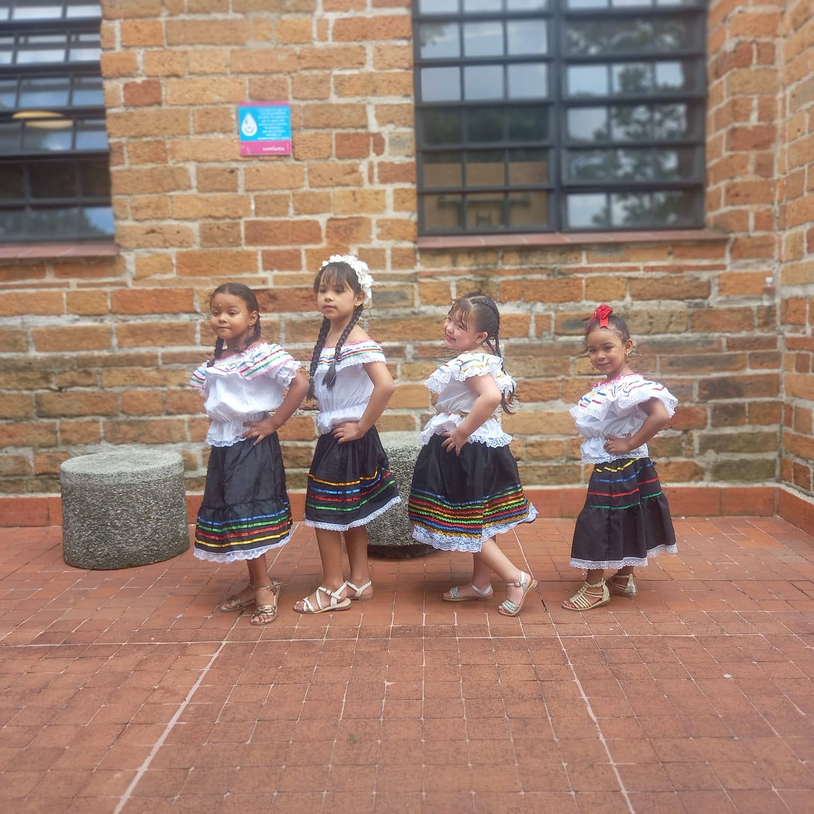
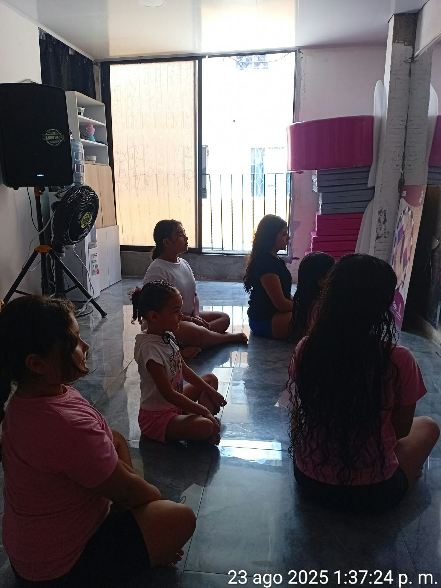
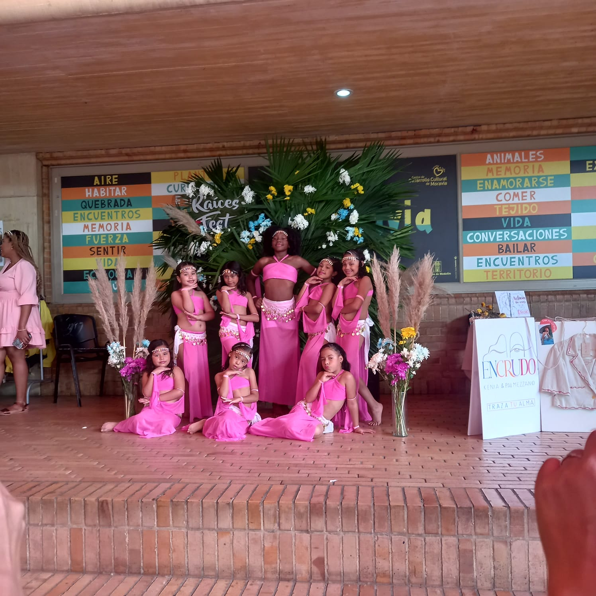

Formación
Procesos artísticos basados en el baile, orientados al aprendizaje y desarrollo de niños, niñas y adolescentes.
Un espacio cultural ubicado en el barrio Moravia de Medellín que promueve la formación artística de niños, niñas y adolescentes a través del baile.
Abracadabra trabaja de la mano con otras corporaciones para desarrollar semilleros artísticos que impactan positivamente a sus integrantes.
Procesos artísticos basados en el baile, orientados al aprendizaje y desarrollo de niños, niñas y adolescentes.
Integración activa de los participantes en semilleros artísticos construidos junto a otras corporaciones.
El arte y la danza como herramientas clave para el fortalecimiento y bienestar de cada uno de sus integrantes.
Registro audiovisual de las actividades de Abracadabra Academia de Danza.
Momentos del proceso artístico y comunitario en el barrio Moravia.

Formación artística

Semilleros de baile

Trabajo articulado
Espacio cultural que promueve la formación artística de niños, niñas y adolescentes a través del baile y el trabajo articulado con corporaciones aliadas.
📍 Barrio Moravia · Medellín, Colombia